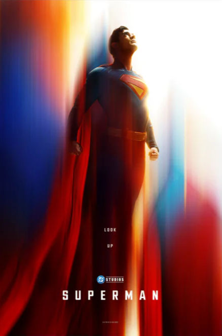

Superman (2025)

A Superhero Movie For Our Generation!
Plot:
Superman is a movie that explores the themes of responsibility, morality, identity and humanity, idealism vs. realism. Superman faces the question of how to do the right thing in a complex, politically divided world. But the cost of solving world threatening problems is the world threatening consensus because of it, forcing him to weigh heroism against his interference.
Superman also learns through his relationship with Lois Lane and the manipulation of Lex Luthor, the story contrasts Superman's unshakable optimism with the world's cynicism. This movie asks its viewer can pure good exist in an imperfect world?
In the midst of a conflict between two fictional nations, Borvia (backed in part by Lex Luthor) and its neighbor Jathanpur, Superman steps in to prevent disaster. But his actions place his ideals of heroism in direct conflict with global politics and a divided public opinion.
Themes and Premise:
David Corenswet (Superman) and Rachel Brosnahan (Lois Lane) bring genuine warmth and chemistry to the screen. Their connection feels natural and deeply human, grounding the film's larger-than-life story. His relationship with Lois Lane is a perfect counterbalance to Superman's superhuman ideals. While Clark strives to do what's right, Lois challenges him to see the world as it truly is complex, flawed, and human.
Meanwhile, Lex Luthor manipulates world events behind the scenes, attempting to turn society against its greatest protector. In doing so, he uncovers and reveals a dark truth about Superman's origin one even Superman himself never knew. This revelation forces him to question everything he believes about his identity, his purpose, and what it truly means to be a hero.
This film also marks the start of a new era for Superman. After the darker tone of the Zack Snyder films, James Gunn's take feels like a breath of fresh air -- hopeful, bright, and emotionally resonant. The worldbuilding is another standout with the inclusion of heroes like Green Lantern and Mr. Terrific hints at a rich universe with endless potential.
At its core, the movie is about holding onto hope when the world tests your faith in humanity. Superman's greatest power isn't his strength but his belief in the good of the people.
Final Verdict:
Superman (2025) is a film filled with ambition, heart, and the promise of something greater. While it may not appeal to every viewer, fans of superhero stories will find themselves inspired by its optimism and emotional depth. It's a movie that reminds us why Superman has endured for generations -- not just because of his strength, but because of his humanity. The movie is about holding onto hope when the world tests your faith in humanity. Superman's greatest power isn't his strength but his belief in the good of the people. If you have a soft spot for comic book heroes, this is one movie you'll be thinking about long after the credits roll.
Filed under Superheroes